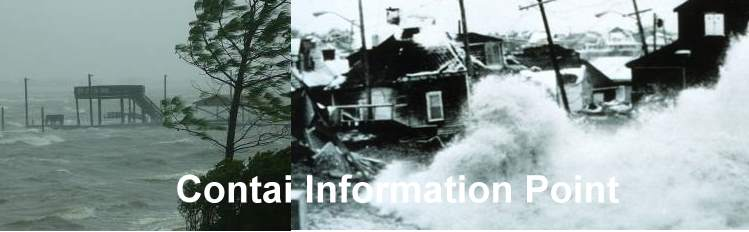

Cyclones and Floods at Contai

Due to its coastal position at the north-west angle of the Bay of Bengal, Contai has frequently been in the "eye of the storm." While sand ridges protect the town, the "Sea-monster" has frequently raided the population.
The Great Cyclone of 1864
On October 5th, 1864, a massive cyclone struck. It signaled the death knell for the port of Khejuri. A storm wave submerged the area, killing thousands. Mr. J. Bottellho, the Postmaster of Khejuri, and his wife were lost while searching for their son on a floating chest.
The Kaukhali Lighthouse records show the sea water rose 13 feet above the ground level.
The Cyclone of 1874
This time, a storm wave higher than that of 1864 burst upon the sea-dyke. It breached the Pitchhaboni sluice (which was under repair) and inundated a vast area. The wind was so strong that masonry houses in Contai town were wrecked.
Recurring Floods
Most of the area being low-lying, floods were a nightmare in 1913, 1920, 1923, 1926, and 1940.
- 1926: Hundreds of villages were marooned. Congress workers like Birendranath Sasmal led relief efforts. Acharya Prafulla Chandra Roy formed the "Medinipur Flood Relief Committee."
- 1940: The Keleyghai river broke embankments, causing massive destruction in Bhagawanpur and Patashpur.
The Great Cyclone of 1942 ("Bangla 49-er Banya")
Date: October 16, 1942 (Maha Saptami)
Wind Speed: 180-200 miles/hour
This was unprecedented. The storm hit on the day of Durga Puja. Mr. Samar Sen, the SDO of Contai, reported that by 3 PM, visibility was zero and masonry walls collapsed. The sea waves were 20 feet high.
The Aftermath
- 13,000 people were killed.
- 75% of cattle died.
- Entire villages in Ramnagar were wiped out. In one instance, Troilakyanath Pradhan was the sole survivor of a 27-member family.
- The devastation led to the Great Famine of 1943.
Despite this, the people's spirit remained unbroken, and they continued their fight for freedom against British rule.